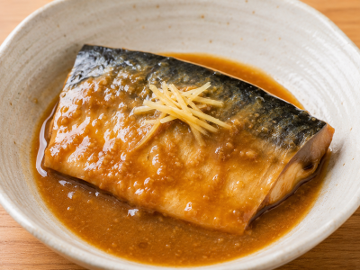
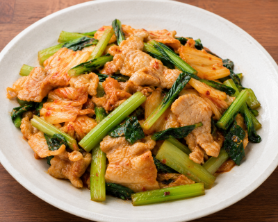
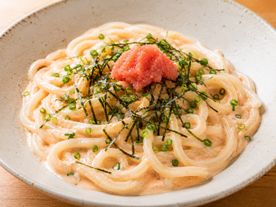

電子レンジで簡単ご飯
電子レンジで手軽に作れる、忙しい学生にぴったりの簡単レシピを紹介します。
目次
サバの味噌煮

材料（1人分）
- サバ（切り身）1切れ（約100g）
- 味噌 大さじ1
- 酒 大さじ1
- みりん 大さじ1
- 砂糖 小さじ1
- しょうゆ 小さじ1/2
- しょうが（チューブ）2〜3cm
作り方
- 耐熱皿にサバを入れ、調味料をすべて混ぜてかける。
- ふんわりラップをして、600Wの電子レンジで4〜5分加熱する。
- 火が通ったら、そのまま2分ほど蒸らして完成。
ポイント
サバが厚い場合は30秒ずつ追加加熱してください。
お好みで小ねぎや白ごまを散らすと風味がアップします。
小松菜の豚キムチ

材料（1人分）
- 豚こま切れ肉 100g
- 小松菜 1/2束（約100g）
- キムチ 80g
- ごま油 小さじ1
- しょうゆ 小さじ1
- 鶏ガラスープの素 小さじ1/2
作り方
- 小松菜は4～5cm幅に切る。豚肉は食べやすい大きさに切る。
- 耐熱ボウルに豚肉、小松菜、キムチを入れ、しょうゆ・鶏ガラスープの素・ごま油を加えて軽く混ぜる。
- ふんわりラップをし、電子レンジ（600W）で4～5分加熱する。
- 一度取り出して全体を混ぜ、豚肉に火が通っていれば完成。火が通っていない場合は30秒ずつ追加加熱する。
ポイント
仕上げに白いりごまや刻みねぎを散らすと、風味がアップしてよりおいしくなります。
明太クリームうどん

材料（1人分）
- 冷凍うどん 1玉
- 明太子 30〜40g
- 牛乳 100ml
- バター 10g
- めんつゆ（2倍濃縮）大さじ1
- ピザ用チーズ 20g（お好み）
- 刻みのり・小ねぎ（お好み）
作り方
- 耐熱ボウルに冷凍うどんを入れ、表示時間通りに電子レンジで加熱する。
- 牛乳、バター、めんつゆ、ピザ用チーズを加え、さらに600Wで1分加熱する。
- バターとチーズが溶けたらよく混ぜ、明太子を加えて全体に和える。
- お好みで刻みのりや小ねぎをのせて完成です。
ポイント
明太子は加熱しすぎると風味が落ちるため、最後に混ぜるとプチプチ食感と旨みを楽しめます。